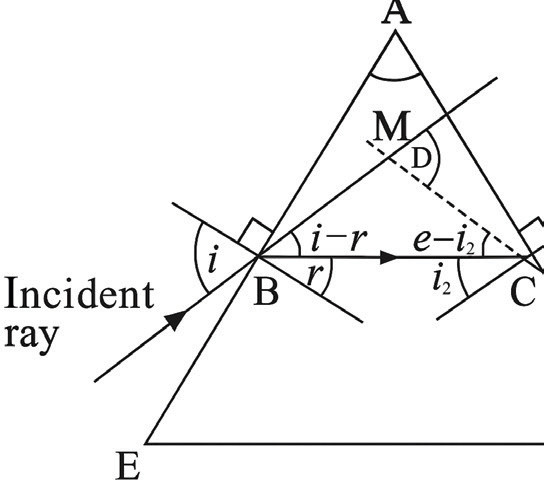

Angle of deviation
The angle of deviation is a measure of how much the incident ray has been deflected from its original direction by the prism. Consider a ray of light incident on a glass prism as shown in Figure 5.11.

where = angle of prism or apex angle
= angle of incidence
= angle of refraction at the first surface
= angle of incidence at the second surface
= angle of emergence from the prism
= angle of deviation. This is the angle between the initial incident ray direction and the final emergent ray direction.
Consider triangle ABC in Figure 5.11.
The sum of internal angles is that is,
Now consider triangle MBC
and can be calculated by Snell’s law.
Consider the first surface, by Snell’s law
In order to determine the angle of deviation , we must consider very small angles, that is, and
Now
Then,
Consider the second surface, by Snell’s law
This implies that,
Substitute Equation (3) and (4) in Equation (2) we have,
Simplifying this equation, you get,
Combining Equations (1) and (5) we finally have,
Therefore, the angle of deviation is given by .